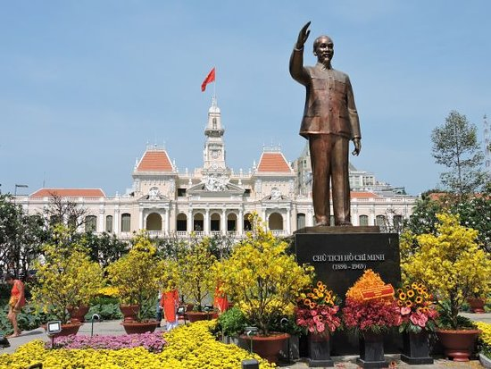

Ho Chi Minh City, formerly known as Saigon, is the largest city in Vietnam. It is a busy metropolis known for its rich history and its blend in modern and traditional culture.
Some of the amazing places to visit as a tourist! Hover of the images to see what's up.
Ho Chi Minh City was named after Ho Chi Minh, the revolutionary leader who played a key role in Vietnam's struggle for independence from French colonial rule and the reunification of North and South Vietnam. He was a revered figure in Vietnamese history and a central figure in the country's fight for freedom and self-determination. The renaming of the city from Saigon to Ho Chi Minh City was intended to honor his contributions and legacy.
